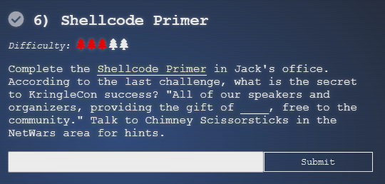
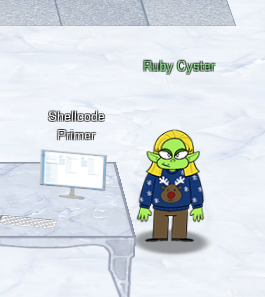

6) Shellcode Primer

Details
- Location: FrostFest/Jack's Office
- Elf: Ruby Cyster
- Objective Link 1: Link

Troll's Objective Message
Hey, I'm Ruby Cyster. Don't listen to anything my sister, Ingreta, says about me.
So I'm looking at this system, and it has me a little bit worried. If I didn't know better, I'd say someone here is learning how to hack North Pole systems. Who's got that kind of nerve! Anyway, I hear some elf on the other roof knows a bit about this type of thing. Oh man - what is this all about? Great work though. So first things first, you should definitely take a look at the firmware. With that in-hand, you can pick it apart and see what's there. Did you know that if you append multiple files of that type, the last one is processed? Have you heard of Hash Extension Attacks? If something isn't working, be sure to check the output! The error messages are very verbose. Everything else accomplished, you just might be able to get shell access to that dusty old thing!
The terminal challenge for this objective is the "Holiday Hero" terminal offered by Chimney Scissorsticks. Solving this terminal challenge provides additional hints for this objective. To view the hints use the menu on the left.
To start this objective click on the "Shellcode Primer" next to Ruby Cryster. There are 11 modules for this challenge. Follow the instructions and hints if you need to figure out each module.
The code for each module is displayed below:
; Set up some registers (sorta like variables) with values
; In the debugger, look how these change!
mov rax, 0
mov rbx, 1
mov rcx, 2
mov rdx, 3
mov rsi, 4
mov rdi, 5
mov rbp, 6
; Push and pop - watch how the stack changes!
push 0x12345678
pop rax
push 0x1111
push 0x2222
push 0x3333
pop rax
pop rax
pop rax
; This creates a string and references it in rax - watch the debugger!
call getstring
db "Hello World!",0
getstring:
pop rax
; Finally, return 0x1337
mov rax, 0x1337
ret
; Remember, this call pushes the return address to the stack
call place_below_the_nop
; This is where the function *thinks* it is supposed to return
nop
; This is a 'label' - as far as the call knows, this is the start of a function
place_below_the_nop:
; TODO: Pop the top of the stack into rax
pop rax
; Return from our code, as in previous levels
ret
; This would be a good place for a call
call place_below_hello_world
; This is the literal string 'Hello World', null terminated, as code. Except
; it'll crash if it actually tries to run, so we'd better jump over it!
db 'Hello World',0
; This would be a good place for a label and a pop
place_below_hello_world:
pop rax
; This would be a good place for a re... oh wait, it's already here. Hooray!
Ret
; TODO: Get a reference to this string into the correct register
call getstring
db "Hello World!",0
getstring:
pop rbx
; Set up a call to sys_write
; TODO: Set rax to the correct syscall number for sys_write
mov rax, 0x1
; TODO: Set rdi to the first argument (the file descriptor, 1)
mov rdi, 0x1
; TODO: Set rsi to the second argument (buf - this is the "Hello World" string)
mov rsi, rbx
; TODO: Set rdx to the third argument (length of the string, in bytes)
mov rdx, 0xC ; put length in rdx
; Perform the syscall
syscall
; Return cleanly
ret
; TODO: Get a reference to this string into the correct register
call getstring
db '/etc/passwd',0
getstring:
pop rbx
; Set up a call to sys_open
; TODO: Set rax to the correct syscall number
mov rax, 0x2
; TODO: Set rdi to the first argument (the filename)
mov rdi, rbx
; TODO: Set rsi to the second argument (flags - 0 is fine)
mov rsi, 0
; TODO: Set rdx to the third argument (mode - 0 is also fine)
mov rdx, 0
; Perform the syscall
syscall
; syscall sets rax to the file handle, so to return the file handle we don't
; need to do anything else!
ret
; TODO: Get a reference to this
call bottom
db '/var/northpolesecrets.txt',0
bottom:
; TODO: Call sys_open
mov rax, 2 ; syscall (sys_open)
pop rdi ; filename
mov rsi, 0
mov rdx, 0
syscall
; TODO: Call sys_read on the file handle and read it into rsp
mov rdi, rax ; handle
mov rax, 0 ; syscall (sys_read)
mov rsi, rsp ; buffer
mov rdx, 138 ; length
syscall
; TODO: Call sys_write to write the contents from rsp to stdout (1)
mov rdx, rax ; length
mov rax, 1 ; syscall (sys_read)
mov rdi, 1 ; handle (stdout)
mov rsi, rsp ; buffer
syscall
; TODO: Call sys_exit
mov rax, 60
mov rdi, 0
syscall
The last challenge will print out the content of the file /var/northpolesecrets.txt. You get the following output from running the challenge:
Answer
cyber security knowledge